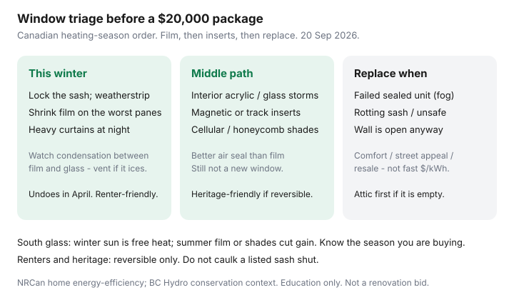

Utilities · Canada
Window Film and Interior Storm Windows in Canada: Cheap Comfort Before Full Replacement
Window sales pitches arrive in September with a foggy-glass photo and a $20,000 package. Drafty but intact windows are usually an air-sealing problem: the sash does not lock, the weatherstrip is gone, and the attic hatch is still a picture frame. Shrink film and interior storms are ugly and sometimes the correct Canadian winter. Full replacement is comfort, street appeal, and failed sealed units — it is rarely the best dollars per kWh on a house with an R-20 attic.
Rank the envelope in upgrade order. Seal what you can with DIY air sealing. Attic targets live in insulation R-values.
Key takeaways
- Replacement is often a comfort and resale buy. Film, weatherstrip, and interior storms are the heating-season bill play on glass that still holds a pane.
- Shrink-film kits are cheap, renter-friendly, and can trap moisture. If the cavity ices, you have a condensation problem — vent or skip that pane.
- Interior acrylic or glass storm panels and cellular shades are the middle: better air seal than film, reversible, still not a new window.
- South-facing glass is a winter heater and a summer oven. Clear winter film vs reflective summer film are different products. Know the season you are buying.
- Heritage and rentals: reversible only. Do not caulk a listed sash or a landlord’s frame shut. Failed sealed units and rot are building problems, not film problems.
Why full window replacement is often a comfort buy, not a fast bill ROI
New triple-glaze is nicer. It is also thousands per opening once you count trim, labour, and the wall you disturbed. On a Canadian house that still leaks at the hatch, the first winter’s kWh rarely pay the glass. NRCan-style guidance and this site’s upgrade-order page put windows after air sealing and attic for that reason.
Replace when the sealed unit has failed (permanent fog), the sash is rotting, the window is unsafe, or the wall is open anyway. A live per-opening rebate (some Ontario assessment streams have listed about $100 per opening in past campaigns) does not invent an $18,000 project. Verify any rebate the week you sign; do not use a 2023 flyer.

Shrink film kits: where they help and condensation risks
Clear indoor shrink film adds a thin still-air gap. It cuts the draft you feel at the stool and a slice of conduction. It is a one-winter product: tape, heat-gun, recycle in April.
- Helps: leaky single-pane, old sliders you can still lock, the bedroom that ices at the bottom corner.
- Does not help: a failed sealed unit (the fog is between factory panes), a window you need as a fire egress you just taped shut, or a sash that will not close.
- Condensation: indoor moisture that used to vent now sits on the cold glass behind the film. If you see standing water or ice, pull a corner or skip that opening. Mould on the stool is a stop, not a “more film” moment.
Hardware-store kits are typically tens of dollars per opening, not hundreds. That is the point.
Interior storm panels and cellular shades as middle options
| Layer | What it does | Watch-out |
|---|---|---|
| Weatherstrip + lock the sash | Stops the leak you feel | Do this before any film. An open lock makes film a joke |
| Shrink film | Still-air gap for one winter | Condensation; egress; tape residue |
| Interior storm (acrylic / glass, magnetic or track) | A real second pane you can remove in April | Measure twice; leave a weep / dry-out plan |
| Cellular / honeycomb shades | Another air cell plus night insulation | Open them on sunny winter days; they are not an air seal if the sash leaks around them |
Interior storms are the usual “I own this house and I hate film” step. They are still cheaper than a full replacement package on intact wood sash — and they are how heritage owners keep original glass.
South-facing summer heat gain vs winter heat loss trade-offs
South glass in January is a free heater. Covering it with reflective summer film all year is how you buy more furnace hours. Low-e retrofit films and exterior solar screens are seasonal tools:
- Winter (most of Canada): clear interior film or storms on the leaky panes; curtains open on south sun, closed at night.
- Summer (especially west glass): exterior shade, a reflective film you accept will also cut winter gain, or just cellular shades you actually lower at 3 p.m.
A heat-pump house still cares — solar gain is free COP. A baseboard plex on Rate D’s 11.142 ¢ second tier cares more.
Heritage and rental constraints
Heritage and conservation-district windows are often the original asset. Interior, reversible storms are the usual compliant path. Exterior replacement can need a permit. Do not caulk a listed sash to the frame.
Renters: film and tension-rod shades you can undo. Ask before drills. A $4,000 window on a lease is not your ROI. Tenants who pay hydro should still weatherstrip what they can undo — heat included vs hydro if the lease is the real lever.
Decision tree: film → inserts → replace
- Does the sash close and lock? If no, repair that. Film will not.
- Is the sealed unit fogged or the wood rotten? That opening is a replacement or sash-repair candidate. The rest of the house may still be film.
- Is the attic below NRCan zone target (often R-45 to R-80)? Do that before any glass package.
- Worst two or three panes: film this week. If you still hate the draft in February, price interior storms for those openings only.
- Whole-house replacement: comfort, noise, street appeal, failed units, or a wall you are opening. Run the dollars as a home-improvement, not as a two-year hydro hack.
BC Hydro and NRCan conservation pages still put envelope leaks ahead of glass catalogues. Believe them in October, when the brochure is glossy.
Sources & date stamps
- NRCan home energy-efficiency / Keeping the Heat In context — air sealing and attic before window packages (used 20 Sep 2026).
- Saving Optimizer upgrade-order companion — windows after hatch and attic; film and inserts as the glass rung.
- BC Hydro residential conservation framing — envelope and behaviour before equipment catalogues (20 Sep 2026).
- Hydro-Québec Rate D 1 Apr 2026 — 11.142 ¢ second tier as the electric-heat ¢ behind a leaky pane.
Frequently asked questions
Will shrink film cut my bill a lot?
It cuts the draft on the openings you cover. It will not beat an empty attic. Treat it as comfort plus a slice of kWh for tens of dollars, not a renovation.
Why is there water under the film?
Indoor humidity hitting cold glass. Pull a corner, run a bathroom fan, or skip that pane. Ice is a stop sign.
Are interior storms worth it versus replacement?
On intact sash, often yes as a reversible middle path — especially heritage glass. They are not a new triple-glaze package and should not be priced like one.
Should I put reflective film on south windows?
Know the season. South sun is winter heat. Reflective film is a summer (or west-glass) tool that can raise heating hours if you leave it on all year.
I’m a renter. What can I do?
Tension-rod shades, removable film, and weatherstrip you can undo. Ask before screws. Do not replace the landlord’s windows on your Visa.